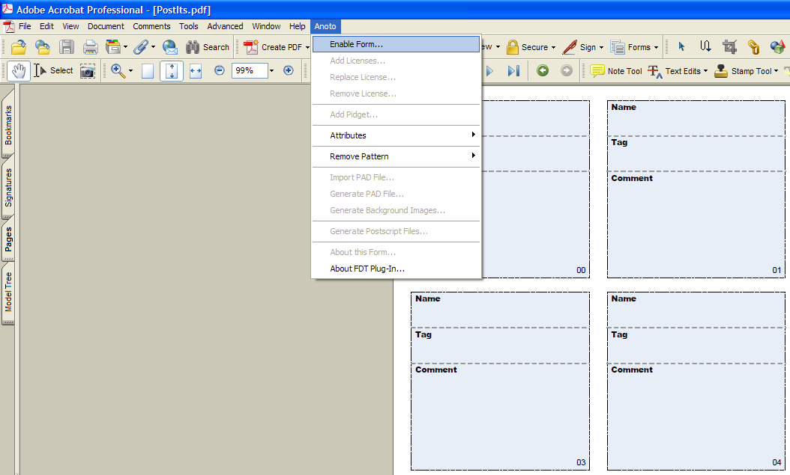
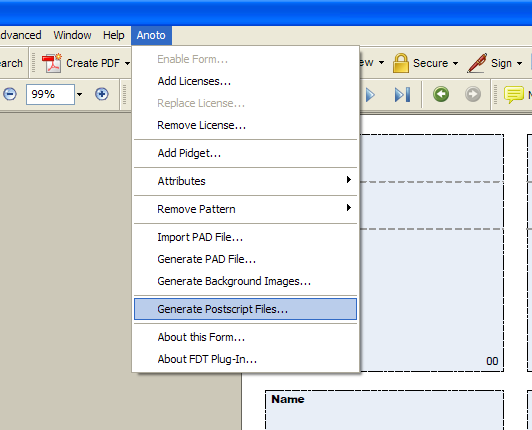

Anoto SDK
Let's learn a little about the Anoto SDK.
- If you haven't, you will need to acquire the Anoto SDK from Anoto AB. If you are a Partner and purchase the ADK Support and Maintenance, you will be able to download the SDK.
- Once you have installed the SDK, you can go to C:\Program Files\Anoto\Anoto SDK For PC Applications\Documentation to read up on how to use it. The documentation describes how Anoto Pattern works, and how to build a .NET application that interacts with the SDK.
- In particular, the Samples directory provides nice examples if you want to build a C++ or a C# application.
If you plan to develop your software directly on top of the Anoto SDK, you are done. =) However, if you plan to develop your software on top of the R3 toolkit, ButterflyNet, or GIGAprints, please read on....
- Our paper tools interact with the Anoto SDK. They provide a higher level "wrapper" so that the designer or developer who uses our tools does not need to worry about creating and registering COM objects. Also, if you like Java, then you have come to the right place. Our tools are built with Java using the Eclipse IDE. We also provide hooks into design environments like Adobe (Macromedia) Flash.
- This is my quick sketch of how the systems interact with each other.
The sketch is actually misleading (at the moment) because R3 is a much newer and smaller project than GIGAprints or BNet. However, as R3 grows and incorporates the best features from GIGAprints and BNet, the role that R3 plays will become larger over time. Ideally, a designer or developer will not need to build on top of GIGAprints or BNet.

Anoto Forms Development Tools (FDT)
One approach when prototyping paper + digital interactions is to use a preprinted notebook. I personally like the Esselte notepads best (A5 and B7), but they are pretty difficult to buy. The only way I've been able to acquire Esselte pads is to buy a Nokia SU-1B digital pen. One A5 and one B7 come packaged in the box. In our research, we use Mead/Cambridge pads, because they are cheap and easy to come by (Mead 5x8).
The second approach is to print your own patterned paper. This is the most flexible approach, but requires more work on your part. You will need to buy the FDT from Anoto, and get a printing license for a pattern segment, in the form of an *.oal file. Then, you need to use Adobe Acrobat Professional (v 7.0 at least), because the FDT is an Acrobat plug-in.
- Create a PDF in a tool of your choice (e.g., Word, Visio, Illustrator).
- Open the PDF with Adobe Acrobat Professional, with the FDT plug-in.
- Add Pattern to it, using your Anoto license.

- Generate a Postscript file.
To do this successfully, you'll need to make sure you have Ghostscript installed, and C:\Program Files\gs\gs8.51\bin;C:\Program Files\gs\gs8.51\lib in your system path.

At this point, you can print the PS file and use it for streaming applications. However, there are other steps to take if you want to use it with batched-mode applications.
- Generate a PAD file.
- Modify it to include the anoto::notepad tag if you want your pattern space to work with the Nokia software.
Modify it to include fieldtools::R3 if you want your pattern to work with the R3 toolkit.
<more to come>
Ron B. Yeh
Stanford University